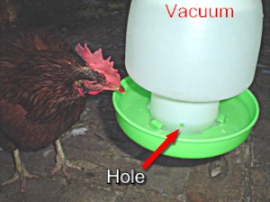
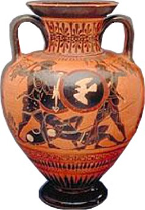
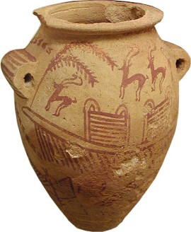
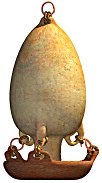
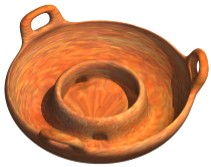
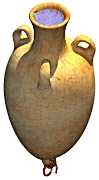
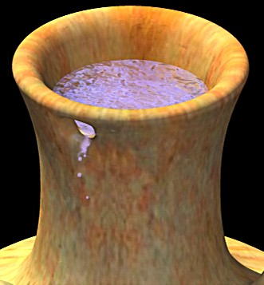
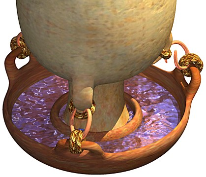
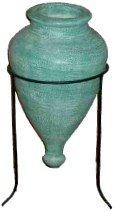
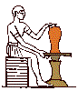

A reliable water supply is essential for animal care. Since most of the animals were smaller than a chicken [3], Noah would benefit from a low maintenance method of dispensing drinking water in relatively small amounts.
The metered delivery of water is essential if the animals are to be watered on a vessel at sea. Large open tanks are not a good idea - they take up space, they get fouled and they can splash around in a storm. Perhaps the most basic of all solutions is the air lock design, commonly used for caged birds. A larger example used for poultry is illustrated below.

Water feeder for poultry
This system is charged by filling the bottle, then fitting the lid (green) and upturning the unit to let the water run out. The water does not overflow because it cannot drain from the bottle when a partial vacuum has been formed inside. The only way to let more water out is to allow air in through the hole, which is exactly what happens as the animals drink the water. The advantages of this system are simple construction and reliability. In Australian summer conditions, (hot and dry), this unit keeps 3 chickens watered for approx 4-5 days. The feeder is suspended on a string to keep the birds from standing on the tray.
Obviously this system could be produced using ancient technology. Pottery could be used in place of the blow molded polypropylene bottle and injection molded tray. In a larger scale, timber could be used - although some care would be needed to ensure a high level of seal in the bottle. (Much easier to seal water than air). However, if Noah could make wine and build ships, so he should know how to make an airtight vessel.
Since the feeder is mounted by hanging it on a string, it would be extremely good at remaining level (not spilling) during rough weather. The length of string should be kept to a minimum so it doesn't gather a big swing - and that the pendulum period does not match the waves or roll period of the vessel. (Not likely: Since big waves or worst case roll period would be around 5 to 10 seconds, this equates to a pendulum length of 6 to 24 meters. Pendulum period = 2 * Pi * ( Length / g) ^0.5)
Suggested Design of an Ancient Water Feeder
Ever wondered why the ancient potters made jars with a pointed bottom? It sure makes no sense for stability. Chances are, they probably 'threw' it on a potters wheel in the inverted position and closed the base last (at the top). This should be pretty easy to check. But if this manufacturing method didn't constrain the odd design, then perhaps they did it because they thought it looked nice (which doesn't explain why ordinary cargo jars had the same form), or they did it because it was always done that way. Maybe, just maybe, they inherited the design...from Noah?
|
It just so happens that the peculiar shape of the ancient amphora is perfect for the job. The sudden narrowing at the neck, the tapered bottom, the placement of handles and the telltale thrown shape from a potters wheel make the ideal ceramic equivalent of the modern water feeder. Amphora, c. 510 - 500 B.C. Image enhanced from |
 |
|
This shape was not a Greek invention. This Egyptian pot was much earlier - not long after the Tower of Babel. The base is too small to stand it up, instead it was hung up through the 'handles' on the sides. Petrie Museum. Predynastic (Gerzean) Naqada II. |
 |
|
With a mounting hole in the base the pot could be hung upside-down. Here's how it would look with three handles instead of the classic two. In its 2 handled form, the standard amphora design might even go back to Noah - and to early civilizations via the Babel dispersion. The length of the cubit seems to indicate an original source such as Noah. |
 |
|
The tray is a rough fitting lid with 3 handles and a couple of water holes beneath the mounting lip to allow the tray to fill up. |
 |
|
This particular shape might be thrown upside-down on the potter's wheel, or perhaps assembled from matching halves - an ancient Greek trick. So the well known amphora of the later civilizations might have begun as Noah's water dispensing vessel. |
  |
|
A ceramic tray is mounted under the amphora and attached to the three handles by ropes and perhaps a metal ring to hasten removal. The hooks might alternatively be timber, or the tray might be a held with a leather cord or rope through all three handles and released with a single knot. |
 |
These units could be made in different sizes and should suit most birds and many animals.
Images copyright Tim Lovett Sept 2004
Refilling procedure
Large units. The complete unit is unhooked from the top and placed on the ground. The rings are detached and the amphora quickly lifted and inverted. In larger units the neck of the amphora is reduced by a cork with two holes, one around 25mm (1") diameter for refilling and the other a smaller breather hole. The amphora is refilled by water supplied in pipes along the length of the walkway, then the tray re-attached. The whole unit is then inverted and hung back up.
Small units. The same way as a modern water feeder. The complete unit is unhooked and quickly inverted, spilling the tray into a bucket. The tray is then detached while the amphora is sitting upright, and the vessel refilled. The tray is re-attached and the vessel inverted again and re-hung.
Estimated time to refill a medium sized unit: 1 minute.
How often? Approx every 2 weeks. With 15,000 animals more than half are smaller than a rat, whose feeders would last a month or more. Many cages would house multiple animals, so the number of water feeders would be around 7000. Re-filling every 14 days, means 500 per day which would be an 8 hour working day for 1 person. The spare time outside of this accounts for meals, rest, and some repairs. So of the eight people aboard, 1 person could take care of water.

Kuba Pot. Obviously this vessel would be thrown upside-down on the wheel then cut off to form the rim of the lid. A simple stand like this would be handy for holding the water feeder during filling.
What a stupid design. Imagine how easily this thing would tip over.
1. The Origin of the Potter's Wheel.http://www.ceramicstoday.com/articles/potters_wheel2.htm
General pottery info http://www.ceramicstoday.com/index.html
|
 |
The invention of a simple wooden turntable probably occurred before 3000 BC. Ancient Egyptian tomb paintings, during the next 2000 years or more, depict potters at work using a number of different versions of turntables made from wood and stone |
3. In terms of animal size, Woodmorappe estimates the median to be the size of a rat. A small number of very large animals brings the average (mean) up to the size of a sheep, as suggested by Whitcomb and Morris. So in terms of number of cages and water feeders, most of the animals were very small. Return to text
{kind=link}